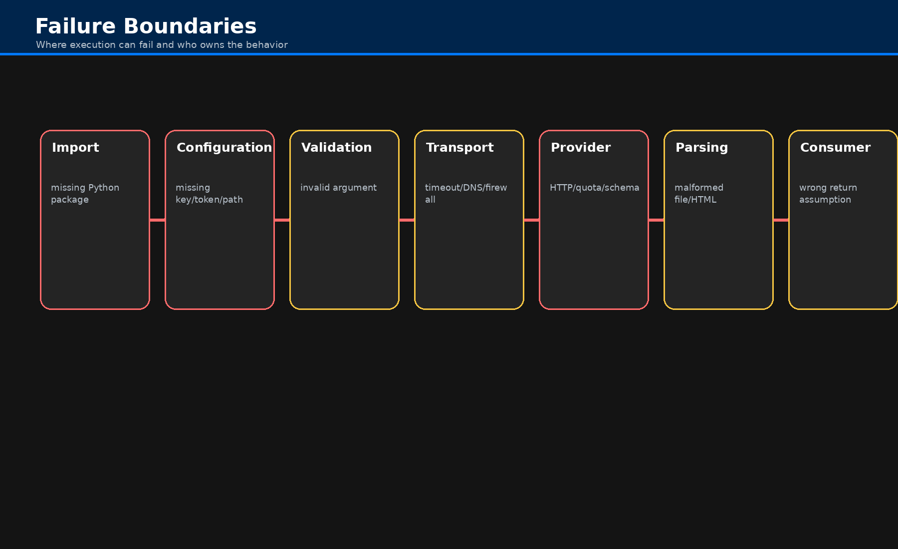

Troubleshooting¶
Troubleshooting Fonky usually means identifying which boundary failed: import, configuration, validation, local filesystem, network transport, provider response, parsing, or return handling.
Failure Boundaries¶

Common Symptoms¶
| Symptom | Likely cause |
|---|---|
ModuleNotFoundError |
Missing package or local module. Install dependencies or fix import path. |
| Credential or authorization error | Missing/invalid environment variable, token file, API key, service account, or provider permission. |
FileNotFoundError |
Path is wrong relative to current working directory or file does not exist. |
| Timeout / connection error | Network, proxy, firewall, provider outage, or timeout setting. |
| HTTP 4xx/5xx | Provider rejected request or provider failed. Inspect status code and payload. |
| Empty result | Valid call with no provider matches, filtered response, or parsed page without target elements. |
| Unexpected return type | Provider-specific result shape; consult target implementation API. |
Import Fails Before Any Call Runs¶
This usually means the active environment lacks a dependency imported by an implementation module. Install requirements and retry a minimal import.
Credential Failures¶
Provider wrappers forward arguments to the implementation class. Some implementations use
credentials from config.py; others accept credentials as method arguments. Verify both the API page
and configuration.md before assuming the wrapper is at fault.
Filesystem Failures¶
Local loaders generally validate that a path exists before loading. Check current working directory, absolute path, file extension, and file permissions.
Network Failures¶
Network and provider calls can fail for DNS, proxy, TLS, timeout, firewall, rate-limit, quota, or provider status reasons. Test with the smallest possible provider query before running a batch.
Parsing Failures¶
Document parsing depends on format-specific libraries. A valid file path can still fail if the file is corrupted, encrypted, malformed, image-only, or unsupported by the selected loader mode.
Wrapper Routing Failures¶
A wrapper routing bug would appear as a Python error before the implementation method starts, such as an undefined class name, missing method, or invalid keyword. The generated wrapper layer should be covered by a routing test that validates every wrapper resolves to its declared class and method.